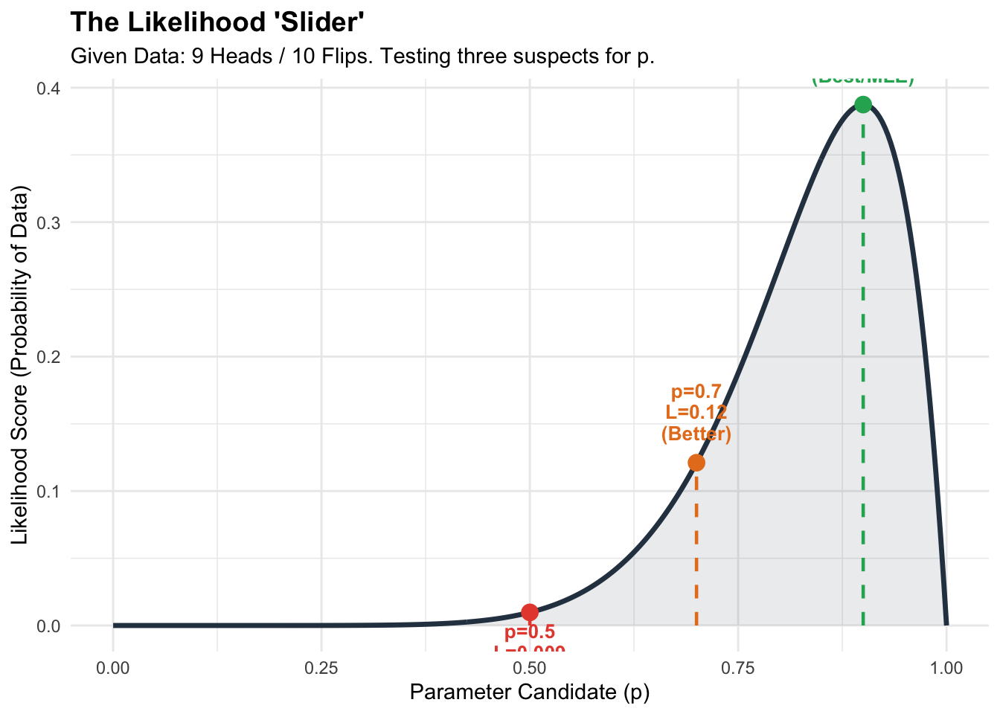

From Probability to Likelihood
From Probability to Likelihood
In the previous chapter, we discussed the “shapes” of data—the Bernoulli, the Binomial, and the Normal. But simply knowing the shape is not enough. As social scientists, we rarely start with the true parameters (like a known population mean). Instead, we start with a dataset and try to work backward to figure out the parameters that produced it.
This chapter covers the most important theoretical jump in statistics: the transition from Probability (deduction) to Likelihood (inference).
To understand this transition, we first need to be precise about our tools. We often use terms like “variable” or “independence” loosely in conversation, but in statistics, they have strict mathematical definitions. If we don’t understand these definitions, the logic of the Likelihood function will not make sense.
2.1 The Prerequisites for Inference
Before we can estimate anything, we need to define the mathematical objects we are working with. There are three core concepts that transform vague observations into computable data.
1. The Random Variable (\(X\))
Social scientists often think of a “variable” simply as a column in a spreadsheet (e.g., Age, Gender, Income). In probability theory, it is slightly more specific.
The Equation: \[X: \Omega \rightarrow \mathbb{R}\]
The Practical Meaning: A Random Variable is actually a function. It is a rule that maps a real-world outcome (\(\Omega\)) to a real number (\(\mathbb{R}\)). * Example: If you ask a survey respondent “Do you support Policy A?”, the real-world outcome is the verbal answer “Yes.” The Random Variable \(X\) is the rule that converts “Yes” into the number \(1\) and “No” into \(0\).
Why we need it: We cannot do math on concepts like “survival” or “support.” We can only do math on numbers. Defining \(X\) formally allows us to apply functions (like the mean or variance) to social phenomena.
2. The Probability Density Function (\(f(x)\))
Once we have numbers, we need to describe how they are distributed. This is the job of the Density Function.
The Equation: For discrete data (PMF): \[P(X = k) = f(k)\] For continuous data (PDF): \[P(a \le X \le b) = \int_{a}^{b} f(x) dx\]
The Practical Meaning: The PDF, denoted as \(f(x)\), tells us the relative likelihood of observing a specific value. * In a Normal distribution, \(f(x)\) is highest at the mean, meaning values near the average are most likely. * In a Poisson distribution, \(f(x)\) tells us the probability of observing exactly \(k\) counts.
Why we need it: This function is the “law” that governs the data. If we know \(f(x)\), we can predict everything about the population. In statistics, our entire goal is usually to find the specific \(f(x)\) (and its parameters) that best fits our data.
3. Independence (i.i.d.)
This is the most critical assumption in almost all standard statistical models.
The Equation: \[P(A \cap B) = P(A) \times P(B)\] Or for a dataset: \[f(x_1, x_2, ..., x_n) = f(x_1) \cdot f(x_2) \cdot ... \cdot f(x_n)\]
The Practical Meaning: Independence means that knowing the outcome of one observation gives you zero information about the outcome of another. * Example: If I survey Person A, their answer does not influence Person B. * Counter-Example: If I survey a husband and wife, their political views are likely correlated. They are not independent.
Why we need it: Without independence, the math breaks. If every data point influenced every other data point, we would need a complex equation modeling all those interactions. Independence allows us to simply multiply the probabilities together. This “multiplication rule” is the engine that makes Likelihood Estimation possible.
2.2 Flipping the Perspective
Now that we have our tools, we can define the central problem of statistics.
In Probability, we treat the parameters as fixed knowns. * Given: The coin is fair (\(p=0.5\)). * Question: What is the probability of getting 9 Heads in 10 flips? * Direction: Parameters \(\rightarrow\) Data.
In Statistics (Likelihood), we face the reverse situation. * Given: We observed 9 Heads in 10 flips. * Question: What is the most plausible value for \(p\)? * Direction: Data \(\rightarrow\) Parameters.
The Likelihood Function \(L(\theta)\) is simply the Probability Density function rewritten to reflect this new perspective.
\[L(\theta | x) = f(x | \theta)\]
- \(f(x|\theta)\) asks: “Given \(\theta\), how probable is the data?”
- \(L(\theta|x)\) asks: “Given the data, how ‘likely’ is the parameter \(\theta\)?”
While they look mathematically identical, they answer different questions. We use the Likelihood function to “grade” different parameter guesses. A parameter that assigns a high probability to our observed data gets a high score (High Likelihood). A parameter that makes our data look impossible gets a low score.
2.3 Maximum Likelihood Estimation (MLE)
We don’t just want to grade parameters; we want to find the best one.
The standard method for doing this is Maximum Likelihood Estimation (MLE). The logic is simple: The best estimate for the unknown parameter is the one that makes our observed data most probable.
The Process: 1. Assume Independence: We assume our \(n\) data points are independent. 2. Multiply: The total likelihood is the product of the individual probabilities: \[L(\theta) = \prod_{i=1}^{n} f(x_i | \theta)\] 3. Maximize: We use calculus (derivatives) or computers to find the specific value of \(\theta\) that maximizes this product.
Practical Example: If you flip a coin 10 times and get 9 Heads, you intuitively guess \(p=0.9\). MLE gives you the mathematical justification. If you plug \(p=0.9\) into the Binomial formula, the probability of seeing “9 successes” is maximized. Any other value (like \(p=0.5\) or \(p=0.99\)) results in a lower probability for that specific outcome.
The plot below demonstrates this optimization. We observe 9 heads. We sweep through all possible values of \(p\) (from 0 to 1). The peak of the curve is our MLE.